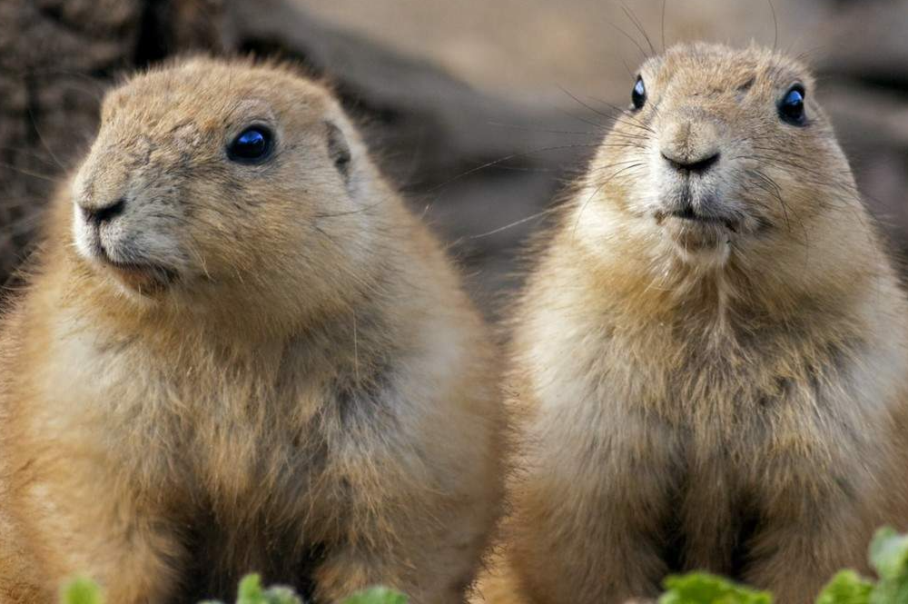

as a carbon-based life form, i enjoy ingesting other carbon-based elements and turning their molecules into energy which i then use to power my fleshy shell. i especially enjoy the taste of sweet potato french fry molecules.
reading
books are made of tree carcasses that bear knowledge. information is conveyed through specific written symbols which have been ascribed meaning through a general consensus. reading is fun-damental and knowledge is power.

prairie dogs
prairie dogs are social animals, look very cute, and have the most advanced language out of any known mammal, aside from humans. that includes dolphins and whales (suck it, dolphins and whales). if you don't believe me, check it out for yourself.